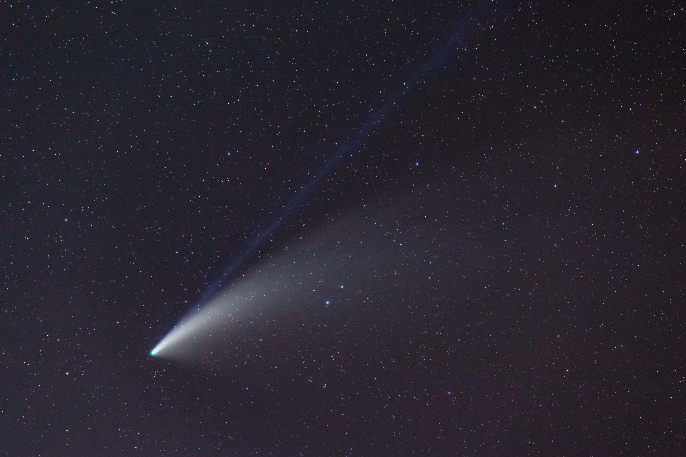

A Night of Solar System Viewing
On Sunday, I made another trip up the the saddle area between Mauna Loa and Maunakea to look at Comet NEOWISE. The forecast was better and sure enough the inversion layer clouds were very low. We only had to drive up the road to about 7,800 ft. elevation to be well clear of them.
With clear dark skies, the comet was much easier to find in twilight and made more of a visual impact with the naked eye. The only thing marring the view was that the military base at Pohakuloa was doing some sort of night training exercises and was launching flares, presumably to illuminate the battlefield.

Comet NEOWISE closeup.
I took some photos and a time lapse on a tracking mount. Because of this, the comet stays stationary and the horizon appears to rise to cover it. This is actually a better representation of what is actually happening as the stars "setting" is actually due to the Earth's rotation causing our horizon to rise.
In the time lapse below, you can see the flares illuminating the sky from just outside the field of view. This is what causes the flashes of orange color in the sky.
The comet also appears to change color and fade as it gets close to the horizon, this is due to our atmosphere scattering the blue light away. It is the same phenomenon which causes sunsets to look orange.
If you look closely at the time lapse, you can see the nucleus of the comet moving slightly against the background stars.
For this session, I'd set up my 152mm refractor. The view of the comet in it was stunning. While binoculars reveal the full extent of the tails (both dust and ion tails were visible), the telescope showed a round compact halo around a pinpoint, star like nucleus. One could also see subtle shading in the tails near the nucleus.
Saturn, Jupiter, and Mars
After the comet set, I turned to the other showpieces of the sky right now: Jupiter and Saturn. While I've observed from various locations on Mauna Loa before, this was a particularly good night with little wind. The wind is often what limits good viewing there as it shakes the telescope. This lack of wind was accompanied by truly excellent seeing which I did not expect. The views of the planets were spectacular.
Jupiter had a richness of detail in the belts which I'd only seen a few times. The four moons each had their own character and were clearly not point sources. Ganymede and Callisto in particular were little tan disks.
Saturn was, if anything, even more spectacular. There was subtle shading in the planet and rings which I'd rarely seen. The only better view of the planet I've ever had was on a trip many years ago to look through the 82 inch Struve telescope at McDonald Observatory.
I spent quite a while just drinking in the views of these two planets. I did spend a few minutes looking at other objects which would be particularly suited to good seeing. The Lambda Cygni double star (0.9" separation, 1.7 magnitude contrast) was "Split nicely! Companion in airy ring of primary." and Tau Cygni (1.0" separation, 2.8 magnitude contrast) was split with more difficulty thanks to the more contrast, with the faint companion appearing as a slightly brighter spot in the airy ring of the primary.
I returned to Jupiter and Saturn though to appreciate those views for a while. I lingered so long that Mars rose and despite it being only 10 degrees or so above the horizon, I took a look. The seeing was obviously worse down at this elevation, but the views were still pretty good. Polar caps and dark markings on the surface were visible. The gibbous phase of the planet made it feel more three dimensional than it does at opposition when it is fully illuminated. I'm really looking forward to this upcoming Mars opposition when the planet will appear much larger and (hopefully) more details will be visible.